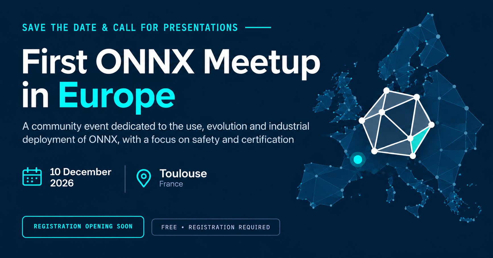

About this event
How can ONNX meet the requirements of critical systems? The first European ONNX Meetup is a workshop dedicated to the use, evolution and industrial deployment of ONNX in critical applications.
It brings together industrial users, researchers, ONNX contributors and technology experts to address key challenges in the deployment of machine learning models, from interoperability and verification to accuracy and performance. The workshop aims to:
- Identify concrete industrial requirements and technical challenges associated with using ONNX in critical systems.
- Explore existing solutions, research opportunities and potential improvements to the ONNX ecosystem.
- Encourage collaboration and contributions towards more reliable, predictable and verifiable AI implementations.
Programme
Thursday, 10 December 2026. Times are local to Toulouse (CET).
Morning - Invited talks
| Time | Session and speakers |
|---|---|
| 09:00 | Welcome and objectives of the meetup Eric Jenn, Pierre Gaillard, Christian Bourjau and Andreas Fehlner |
| 09:10 | ONNX: Current status and roadmap Andreas Fehlner (Trumpf) |
| 09:30 | Keynote: Lessons learned from almost 10 years between trained models and ONNX inference Xavier Dupré (Microsoft) |
| 10:10 | Challenges for certified systems in aeronautics Jean Souyris (Airbus) and Henri Belfy (Thales) |
| 10:35 | Coffee break |
| 10:55 | Hands-on introduction: Verifying AI Models Before They Reach the Edge Antoni Woss (MathWorks) |
| 11:15 | Aidge: From Model Representation to Optimized Deployment Iryna de Albuquerque and Axel Farrugia (CEA) |
| 11:35 | ONNX in practice: from model to industrial application using SOTA Youssef Menjour (Graiphic) |
| 11:55 | Lunch |
Afternoon - Community contributions
| Time | Session and speakers |
|---|---|
| Topic 1: Specifying operators and models | |
| 12:55 | Status of SONNX working group Eric Jenn (IRT Saint Exupéry) |
| 13:20 | QONNX: Arbitrary-Precision Quantized Neural Networks in ONNX Christoph Berganski (Paderborn University) |
| Topic 2: Testing operators and models | |
| 13:45 | Towards a reusable conformance test suite for ONNX Christian Bourjau (QuantCo) |
| Topic 3: Optimization and implementation | |
| 14:10 | ONNX Passes: Custom Graph Transformation Infrastructure based on ONNX Script Christoph Berganski (Paderborn University) |
| 14:35 | Towards Certifiable AI Deployment with Aidge: SONNX and ACETONE Filipo Perotto (ONERA) and Mariem Turki (IRT Saint Exupéry) |
| 15:00 | Hands-on session MathWorks, Graiphic and Aidge |
| 16:00 | Break |
| Topic 4: Verifying operators and models | |
| 16:10 | PyRAT & Aidge: Formal verification of quantized AI models Augustin Lemesle (CEA) |
| 16:30 | How Much Precision Does a Neural Network Need? A Formal Answer for Critical Systems Dorra Ben-Khalifa (ENAC) |
| Topic 5: Accuracy analysis | |
| 16:50 | Formal accuracy semantics of SONNX components and challenges of DNN accuracy verification Franck Védrine (CEA) |
| 17:10 | Closure Organizers |
The programme is subject to updates. The latest information is on the registration page.
Call for presentations
Have a use case, a lesson learned, a tool or a research result to share? We welcome your contributions! Please contact us to discuss your proposal.
Registration
Participation is on-site or remote. Registration is free but mandatory.
Help us make this first European edition a success by sharing the announcement with your network!
Organizing committee
- Christian Bourjau (QuantCo)
- Andreas Fehlner (ONNX Steering Committee)
- Pierre Gaillard (CEA)
- Eric Jenn